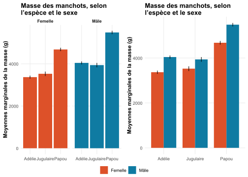

Suite à mon dernier billet (ici), on m’a fait remarquer qu’il pouvait être utile de transformer une sortie de régression type lm() en graphique. Je propose deux façons de faire, en ggplot2.
Date de publication
23 avril 2026
Point de départ
Dans mon dernier billet de blog (ici, qui date un peu, je sais), je proposais des fonctions pour automatiser l’extraction des coefficients d’un modèle de type lm() en R. Mais voilà, on peut potentiellement préférer un (joli) graphique, plutôt qu’une (jolie) table. Aussi jolie soit-elle. Voici donc une manière rapide, facile et personnalisable pour transformer des moyennes marginales en graphique, en R.
Je repars à nouveau du jeu de données penguins(Horst et al., 2020), pour lequel j’ajuste le modèle suivant :
Chaque \(\mathbf{1}(\cdots)\) est un indicateur qui prend 1 quand l’individu \(i\) correspond à la catégorie, et 0 autrement. La catégorie de référence, lorsque tous les \(\mathbf{1}(\cdots)\) valent 0, correspond aux femelles Adélie et \(\alpha\) est leur masse moyenne.
Dit autrement, je régresse la masse sur l’espèce, le sexe, et l’interaction espèce x sexe. C’est une légère différence par rapport au dernier post, qui n’incluait pas d’interaction. La sortie est la suivante :
Paramètre
Estimation
[IC 95 %]
Erreur standard
Statistique t (327)
p-valeur
β
[IC 95 %]
(Intercept)
3368.84 [3297.6; 3440.07]
36.21
93.03
< .001
-1.04 [-1.13; -0.95]
Espèce : Jugulaire
158.37 [31.99; 284.75]
64.24
2.47
0.014
0.2 [0.04; 0.35]
Espèce : Papou
1310.91 [1203.84; 1417.97]
54.42
24.09
< .001
1.63 [1.5; 1.76]
Sexe : Mâle
674.66 [573.91; 775.4]
51.21
13.17
< .001
0.84 [0.71; 0.96]
Espèce : Jugulaire x Sexe : Mâle
-262.89 [-441.62; -84.17]
90.85
-2.89
0.004
-0.33 [-0.55; -0.1]
Espèce : Papou x Sexe : Mâle
130.44 [-19.93; 280.8]
76.44
1.71
0.089
0.16 [-0.02; 0.35]
Note : n = 333 observations.
Table 1: Régression de la masse des manchots en grammes sur l’espèce, le sexe, et l’interaction espèce x sexe, selon l’Équation 1. Sortie de la fonction lm_summary() passée via lm_tab().
Cette table renvoie déjà toutes les informations nécessaires pour interpréter le modèle (si, si : on en parlera une prochaine fois). Mais, on pourrait malgré tout lui préférer une représentation graphique directement estimée à partir du modèle.
Extraire les moyennes marginales et les envoyer vers un graphique ggplot2
Cela nécessite deux étapes :
Extraire les moyennes marginales du modèle.
Représenter ces moyennes marginales.
Extraire les moyennes marginales du modèle
(Presque) rien de plus simple, via le package marginaleffects(Arel-Bundock et al., 2024) et sa fonction avg_predictions() :
Table 2: Régression de la masse des manchots en grammes, sur l’espèce et le sexe, selon l’Équation 1. Sortie de la fonction avg_predictions() passée via knitr::kable().
Cette table ne fournit aucune information supplémentaire comparée à la table de régression1, mais va nous permettre de réaliser notre graphique des moyennes marginales.
Représenter les moyennes marginales du modèle
Ici, il nous suffit de repartir de l’objet qui stocke les moyennes marginales, pour l’envoyer vers ggplot()(Wickham, 2016). Cet objet contient, parmis d’autres, les deux informations qui nous intéressent ici :
La masse moyenne, par espèce, en fonction du sexe.
L’intervalle de confiance à 95 % de cette masse moyenne.
Je vous propose deux solutions, selon vos préférences. Aucun n’est vraiment mieux que l’autre :
Le premier, à gauche, met l’accent sur la comparaison entre espèces, à sexe constant.
Le second, à droite, met l’accent sur la comparaison entre sexes, à espèce constante.
Voir le code
# Un premier graphique, qui représente les données en deux sous-facettes selon le sexep1 <- lm_1_mean %>%ggplot() +aes(x = espece, y = estimate, fill = sexe) +geom_col() +geom_errorbar(aes(ymin = conf.low, ymax = conf.high), width =0) +scale_fill_manual(values =c(Femelle = egypt[1], Mâle = egypt[2])) +facet_wrap(~ sexe) +# C'est ici que ça se passe, pour représenter les données en deux sous-facetteslabs(y ="Moyennes marginales de la masse (g)",fill ="Sexe",title ="Masse des manchots, selon l’espèce et le sexe") +theme(axis.text.x =element_text())# Un second graphique, qui représente les données côte à côtep2 <- lm_1_mean %>%ggplot() +aes(x = espece, y = estimate, fill = sexe) +geom_col(position =position_dodge(width =0.8), width =0.8) +# C'est ici que ça se passe, via position_dodge(), pour représenter les données côte à côtegeom_errorbar(aes(ymin = conf.low, ymax = conf.high),position =position_dodge(width =0.8),width =0.0) +scale_fill_manual(values =c(Femelle = egypt[1], `Mâle`= egypt[2])) +labs(y ="Moyennes marginales de la masse (g)",fill ="Sexe",title ="Masse des manchots, selon l’espèce et le sexe") +theme(axis.text.x =element_text())ggarrange( p1, p2,common.legend = T,legend ="bottom")

Figure 1: Masse des manchots en grammes, selon l’espèce et le sexe. La barre représente l’intervalle de confiance, à 95 %.
Cette Figure 1 ne dit rien de plus ou de moins que la Table 1, mais le fait différemment, en étant certainement plus simple à lire qu’une table de régression.
Références
Arel-Bundock, V., Greifer, N., & Heiss, A. (2024). How to Interpret Statistical Models Using marginaleffects for R and Python. Journal of Statistical Software, 111(9), 1‑32. https://doi.org/10.18637/jss.v111.i09
Wickham, H. (2016). ggplot2: Elegant Graphics for Data Analysis. Springer-Verlag New York. https://ggplot2.tidyverse.org
Notes de bas de page
L’intercept renvoie déjà la masse moyenne, pour un manchot de l’espèce de référence Adélie, de sexe de référence Femelle; le coefficient de Espèce : Jugulaire renvoie déjà la différence moyenne, pour un manchot de l’espèce Jugulaire, de sexe femelle, par rapport à l’intercept; etc…).↩︎
Code source
---title: "Transformer une sortie `R` (moche) en un graphique (beau)"date: 04-23-2026categories: ["R", "Modèle linéaire", "Fonction"]tags: ["Technique", "R"]description: "Suite à mon dernier billet ([ici](https://charlymarie.github.io/posts/03%20-%20lm_summary()/lm_summary().html){target='_blank'}), on m'a fait remarquer qu'il pouvait être utile de transformer une sortie de régression type `lm()` en graphique. Je propose deux façons de faire, en `ggplot2`."lang: frbody-classes: indent-paragraphsformat: html: code-fold: true code-summary: "Voir le code" code-overflow: wrap code-tools: true code-block-bg: trueexecute: warning: false error: falsedraft: false---<hr style="border:1px solid blue" />```{r echo=FALSE}library(tidyverse); library(ggtext); library(marginaleffects); library(ggpubr)# Définir les fonctions pour extraire les paramètres d'un lm()lm_summary <- function(model, vcov = NULL) { # Extraire les paramètres non standardisés mp <- parameters::model_parameters(model, vcov = vcov) # Extraire les paramètres standardisés (refit le modèle) mp_std <- dplyr::select( parameters::model_parameters( model, standardize = "refit", vcov = vcov), Parameter, Std_Coefficient = Coefficient, Std_CI_low = CI_low, Std_CI_high = CI_high) mp <- dplyr::left_join(mp, mp_std, by = "Parameter") # Préparer les données mp <- dplyr::mutate(mp, # Arrondir p à trois décimales p = ifelse(p < .001, "< .001", round(p, 3)), # Arrondir les autres valeurs à deux décimales dplyr::across(dplyr::where(is.numeric), ~ round(.x, 2)), # Réunir l'intervalle de confiance de l'estimate et le placer sous le Coefficient Coefficient = paste0(Coefficient, "<br>", "[", CI_low, "; ", CI_high, "]"), # Réunir l'intervalle de confiance de β et le placer sous β β = paste0(Std_Coefficient, "<br>", "[", Std_CI_low, "; ", Std_CI_high, "]"), # Conserver le modèle pour lm_tab, même après des verbes dplyr (mutate, filter, etc.) .model = list(model)) # Renommer les colonnes : les colonnes avec un nom simple mp <- dplyr::rename(mp, Paramètre = Parameter, Estimation = Coefficient, "Erreur standard" = SE, p = p) # Renommer les colonnes : la colonne t est un peu plus complexe, car je souhaite y intégrer le nombre de degrés de liberté de la statistique mp <- dplyr::rename_with(mp, ~ paste0("Statistique t (", broom::glance(model)$df.residual, ")"), .cols = t) # Ne pas garder les colonnes qui ont déjà été incorporées à d'autres, ou ne sont pas utiles mp <- dplyr::select(mp, -c(CI, CI_low, CI_high, df_error, Std_Coefficient, Std_CI_low, Std_CI_high)) mp}lm_tab <- function(lm_summary) { lm_model <- attr(lm_summary, "model") if (is.null(lm_model) && ".model" %in% names(lm_summary)) { lm_model <- lm_summary$.model[[1]] } if (is.null(lm_model)) { stop("Aucun modèle retrouvé en sortie de lm_summary.") } g <- broom::glance(lm_model) t_col <- paste0("Statistique t (", g$df.residual, ")") tab <- gt::gt(lm_summary) # Ne pas afficher la colonne technique, qui contient le modèle tab <- gt::cols_hide(tab, columns = dplyr::any_of(".model")) tab <- gt::cols_label( tab, Paramètre = gt::html("<strong>Paramètre</strong>"), Estimation = gt::html("<strong>Estimation<br>[IC 95 %]</strong>"), `Erreur standard` = gt::html("<strong>Erreur standard</strong>"), !!t_col := gt::html( paste0("<strong>Statistique <em>t</em> (", g$df.residual, ")</strong>")), p = gt::html("<strong><em>p</em>-valeur</strong>"), β = gt::html("<strong><em>β</em><br>[IC 95 %]</strong>")) tab <- gt::fmt_markdown(tab, columns = c(Estimation, β)) tab <- gt::cols_align( tab, align = "center", columns = c(Estimation, `Erreur standard`, dplyr::all_of(t_col), p, β)) tab <- gt::tab_source_note( tab, gt::html(paste0("<em>Note</em> : n = ", scales::number(g$nobs), " observations."))) tab}#### Construire un thème ggplot() personnalisé ##### Quasi entièrement copié d'Andrew Heiss: https://www.andrewheiss.com/blog/2021/12/20/fully-bayesian-ate-iptw/# Avec l'aide de Nicolas Rennie: https://nrennie.rbind.io/art-of-viz/programming-languages.htmlegypt <- MetBrewer::met.brewer("Egypt")theme_nice <- function() { theme_minimal(base_family = "Times") + theme( panel.grid.minor = element_blank(), plot.background = element_rect(fill = "white", color = NA), plot.title = element_textbox_simple(lineheight = 0.5, face = "bold"), plot.subtitle = element_textbox_simple(lineheight = 0.5), plot.caption = element_textbox_simple(lineheight = 0.5, halign = 1), axis.title = element_text(face = "bold"), strip.text = element_text(face = "bold", size = rel(0.8)), strip.background = element_rect(fill = "white", color = NA), legend.position = "bottom", legend.title=element_blank(), # Rien en X axis.title.x=element_blank(), axis.text.x=element_blank(), axis.ticks.x=element_blank())}# Faire de ce thème le thème par défauttheme_set(theme_nice())```# Point de départDans mon dernier billet de blog ([ici](https://charlymarie.github.io/posts/03%20-%20lm_summary()/lm_summary().html){target='_blank'}, qui date un peu, je sais), je proposais des fonctions pour automatiser l'extraction des coefficients d'un modèle de type `lm()` en `R`. Mais voilà, on peut potentiellement préférer un (joli) graphique, plutôt qu'une (jolie) table. Aussi jolie soit-elle. Voici donc une manière rapide, facile et personnalisable pour transformer des moyennes marginales en graphique, en `R`.Je repars à nouveau du jeu de données `penguins`[@palmerpenguins], pour lequel j'ajuste le modèle suivant :$$\begin{aligned}\text{masse}_i = \; & \alpha + \beta_1 \, \mathbf{1}(\text{espèce}_i = \text{Jugulaire})+ \beta_2 \, \mathbf{1}(\text{espèce}_i = \text{Papou}) \\& + \beta_3 \, \mathbf{1}(\text{sexe}_i = \text{Mâle}) + \beta_4 \, \mathbf{1}(\text{espèce}_i = \text{Jugulaire}) \times \mathbf{1}(\text{sexe}_i = \text{Mâle}) \\& + \beta_5 \, \mathbf{1}(\text{espèce}_i = \text{Papou}) \times \mathbf{1}(\text{sexe}_i = \text{Mâle}) + \varepsilon_i\end{aligned}$$ {#eq-un}Chaque $\mathbf{1}(\cdots)$ est un indicateur qui prend 1 quand l'individu $i$ correspond à la catégorie, et 0 autrement. La catégorie de référence, lorsque tous les $\mathbf{1}(\cdots)$ valent 0, correspond aux femelles Adélie et $\alpha$ est leur masse moyenne.Dit autrement, je régresse la masse sur l'espèce, le sexe, et l'interaction espèce x sexe. C'est une légère différence par rapport au dernier post, qui n'incluait pas d'interaction. La sortie est la suivante :```{r, output=axis, echo=FALSE}#| label: tbl-regression-lmsummary#| tbl-cap: "Régression de la masse des manchots en grammes sur l'espèce, le sexe, et l'interaction espèce x sexe, selon l'@eq-un. Sortie de la fonction `lm_summary()` passée via `lm_tab()`."df <- palmerpenguins::penguins %>% mutate( species = case_when( species == "Adelie" ~ "Adélie", species == "Chinstrap" ~ "Jugulaire", species == "Gentoo" ~ "Papou"), sex = case_when( sex == "female" ~ "Femelle", sex == "male" ~ "Mâle")) %>% # Traduire les données rename( masse = body_mass_g, espece = species, sexe = sex) # Renommer les colonneslm_1 <- lm(masse ~ espece * sexe, df)lm_1 %>% lm_summary() %>% mutate( Paramètre = case_when( Paramètre == "especeJugulaire" ~ "Espèce : Jugulaire", Paramètre == "especePapou" ~ "Espèce : Papou", Paramètre == "sexeMâle" ~ "Sexe : Mâle", Paramètre == "especeJugulaire:sexeMâle" ~ "Espèce : Jugulaire x Sexe : Mâle", Paramètre == "especePapou:sexeMâle" ~ "Espèce : Papou x Sexe : Mâle", .default = Paramètre)) %>% lm_tab()```Cette table renvoie déjà toutes les informations nécessaires pour interpréter le modèle (si, si : on en parlera une prochaine fois). Mais, on pourrait malgré tout lui préférer une représentation graphique *directement estimée à partir du modèle*.# Extraire les moyennes marginales et les envoyer vers un graphique `ggplot2`Cela nécessite deux étapes : 1. Extraire les moyennes marginales du modèle.2. Représenter ces moyennes marginales.## Extraire les moyennes marginales du modèle(Presque) rien de plus simple, via le package `marginaleffects`[@marginaleffects] et sa fonction `avg_predictions()` :```{r, output="asis"}#| label: tbl-marginalmeans1#| tbl-cap: "Régression de la masse des manchots en grammes, sur l'espèce et le sexe, selon l'@eq-un. Sortie de la fonction `avg_predictions()` passée via `knitr::kable()`."lm_1_mean <- avg_predictions(lm_1, variables = c("espece", "sexe"), df = insight::get_df(lm_1))lm_1_mean %>% knitr::kable()```Cette table ne fournit aucune information supplémentaire comparée à la table de régression^[L'`intercept` renvoie déjà la masse moyenne, pour un manchot de l'espèce de référence Adélie, de sexe de référence Femelle; le coefficient de `Espèce : Jugulaire` renvoie déjà la différence moyenne, pour un manchot de l'espèce Jugulaire, de sexe femelle, par rapport à l'intercept; etc...).], mais va nous permettre de réaliser notre graphique des moyennes marginales.## Représenter les moyennes marginales du modèleIci, il nous suffit de repartir de l'objet qui stocke les moyennes marginales, pour l'envoyer vers `ggplot()`[@ggplot2wickham]. Cet objet contient, parmis d'autres, les deux informations qui nous intéressent ici :- La masse moyenne, par espèce, en fonction du sexe.- L'intervalle de confiance à 95 % de cette masse moyenne.Je vous propose deux solutions, selon vos préférences. Aucun n'est vraiment mieux que l'autre :- Le premier, à gauche, met l'accent sur la comparaison entre espèces, à sexe constant.- Le second, à droite, met l'accent sur la comparaison entre sexes, à espèce constante.```{r}#| label: fig-plot-penguins#| fig-cap: "Masse des manchots en grammes, selon l’espèce et le sexe. La barre représente l'intervalle de confiance, à 95 %."#| out-width: "80%"#| fig-align: "center"# Un premier graphique, qui représente les données en deux sous-facettes selon le sexep1 <- lm_1_mean %>%ggplot() +aes(x = espece, y = estimate, fill = sexe) +geom_col() +geom_errorbar(aes(ymin = conf.low, ymax = conf.high), width =0) +scale_fill_manual(values =c(Femelle = egypt[1], Mâle = egypt[2])) +facet_wrap(~ sexe) +# C'est ici que ça se passe, pour représenter les données en deux sous-facetteslabs(y ="Moyennes marginales de la masse (g)",fill ="Sexe",title ="Masse des manchots, selon l’espèce et le sexe") +theme(axis.text.x =element_text())# Un second graphique, qui représente les données côte à côtep2 <- lm_1_mean %>%ggplot() +aes(x = espece, y = estimate, fill = sexe) +geom_col(position =position_dodge(width =0.8), width =0.8) +# C'est ici que ça se passe, via position_dodge(), pour représenter les données côte à côtegeom_errorbar(aes(ymin = conf.low, ymax = conf.high),position =position_dodge(width =0.8),width =0.0) +scale_fill_manual(values =c(Femelle = egypt[1], `Mâle`= egypt[2])) +labs(y ="Moyennes marginales de la masse (g)",fill ="Sexe",title ="Masse des manchots, selon l’espèce et le sexe") +theme(axis.text.x =element_text())ggarrange( p1, p2,common.legend = T,legend ="bottom")```Cette @fig-plot-penguins ne dit rien de plus ou de moins que la @tbl-regression-lmsummary, mais le fait différemment, en étant certainement plus simple à lire qu'une table de régression.# Références